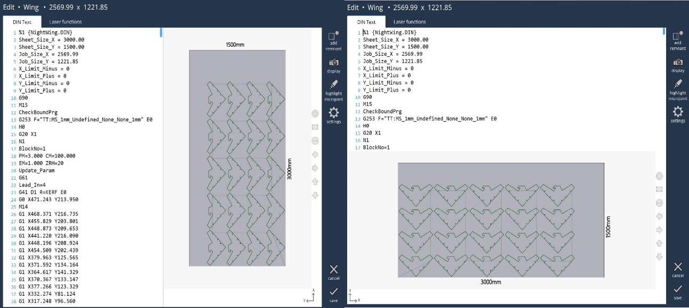
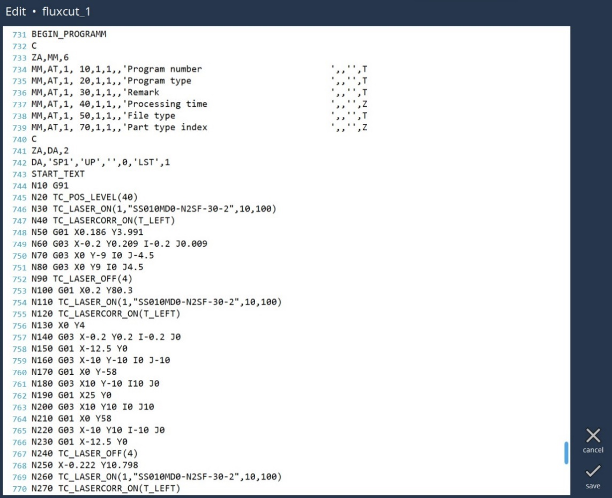

Edit NC Code
Edit DIN Text
Select (touch) the DIN program you want to edit and then press this button. This brings the Edit page where user can make the necessary changes to the program. The page shows the program name and dimension at the top. User can change the orientation in which the program should be displayed (portrait or landscape) in “machine settings”.

DIN text
In the DIN text page, we can make changes to the NC. When we can select a line in DIN editor, the corresponding segment in the drawing will be highlighted and vice versa. The find (Ctrl + F) and replace (Ctrl + H) options of a text editor are available.

-
Add remnant : Selecting this will create a remnant sheet. It can also be deleted.
-
Display : User can turn on or off the sheet or machine display.
-
Highlight Microjoint : User can quickly confirm if the required contours are micro-jointed or not. Selecting this option highlights the micro joint in the drawing.
-
Settings : User can configure the distance which allows to add remnant.
-
Cancel : It will close the dialog and go back to the programs page without saving the changes.
-
Save : It will save the changes made by the user.
Edit LST
Select (touch) the LST program you want to edit and then press this button. This brings the Edit page where user can make the necessary changes to the program. In the LST text page, we can make changes to the NC. The find (Ctrl + F) and replace (Ctrl + H) options of a text editor are available.
